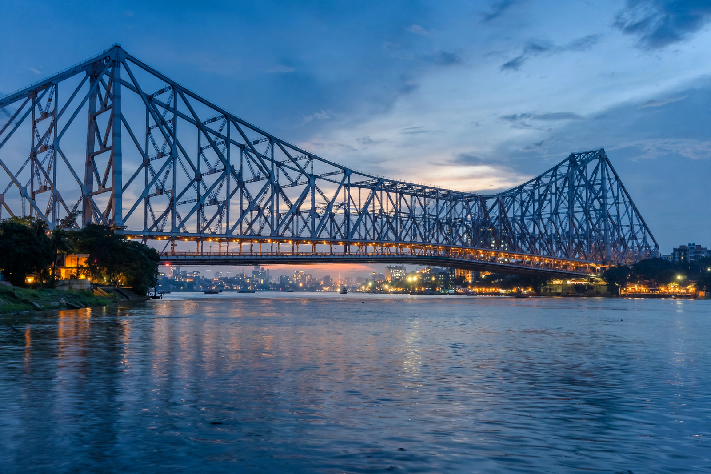

Kolkata
Kolkata, formerly known as Calcutta, is the capital of the Indian state of West Bengal, located on the eastern bank of the Hooghly River.

History
Kolkata served as the capital of British India until 1911. It became a major centre of education, science, culture and politics, and later of industry based on jute and other trades. It is strongly associated with figures including the writer Rabindranath Tagore and with Mother Teresa, who founded the Missionaries of Charity there in 1950.
Culture
The city is known for its colonial architecture, trams, coffee houses, Durga Puja festival, Bengali literature and cinema, and institutions such as the Victoria Memorial and the Indian Museum.